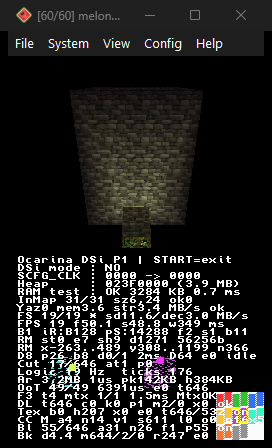
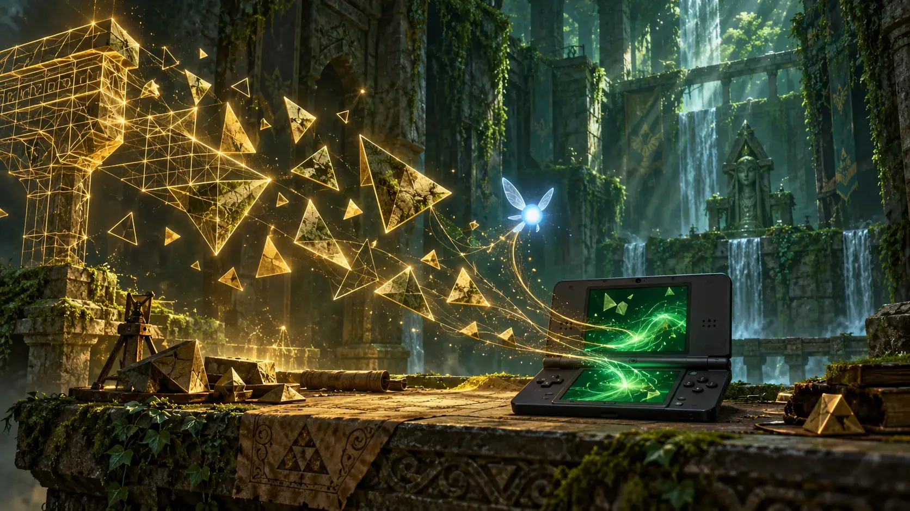
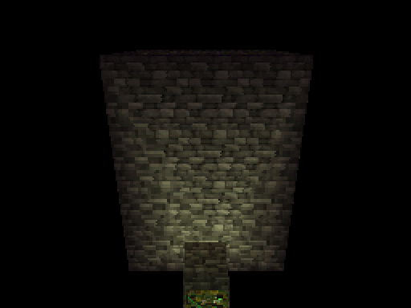
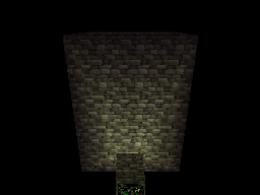
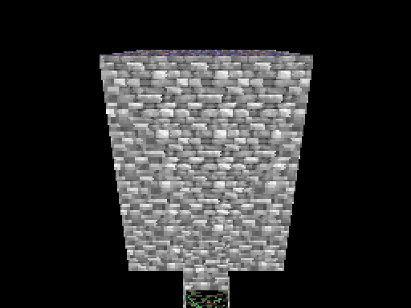
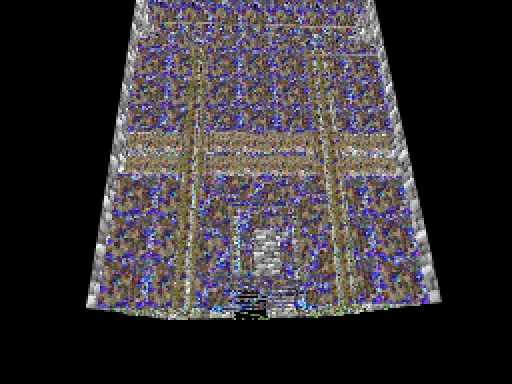
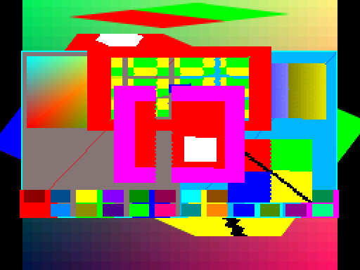

Traduzir, não emular
Cada display list F3DEX2 é decodificada e reemitida no formato do DS: matrizes, vértices, texturas, combiner, viewport e recorte. Nada de um N64 inteiro rodando por software.
PESQUISA E DESENVOLVIMENTO · ADAPTAÇÃO EXPERIMENTAL
Uma investigação técnica para adaptar Ocarina of Time ao Nintendo DSi, com tradução gráfica, gerenciamento de recursos e integração gradual dos sistemas do jogo.
PROJETO EXPERIMENTAL · EM DESENVOLVIMENTO · SEM ROM, DOWNLOAD OU LANÇAMENTO
01 / APRESENTAÇÃO
O projeto traduz o pipeline gráfico do N64 para o DS e integra, aos poucos, os sistemas do jogo. O que existe hoje é uma base técnica medida — não o jogo inteiro.
Este é um projeto experimental de adaptação nativa de The Legend of Zelda: Ocarina of Time para o Nintendo DSi. O ponto de partida é a decompilação em C do jogo; o port interpreta as display lists F3DEX2 e as traduz para o geometry engine do DS.
Não é um emulador, não é um ROM distribuível e não é um jogo completo. O que existe hoje é uma base técnica: uma sala real renderizada no emulador, com o motor gráfico e a integração do jogo crescendo em frentes separadas.
Tudo o que aparece nesta página foi registrado com identificadores OTD-NNN. Resultados de emulador são apresentados como resultados de emulador; nenhuma entrega foi validada em DSi físico.

02 / O DESAFIO
O jogo espera um RSP e um RDP. O DS oferece um geometry engine, duas telas e um ARM9 sem FPU. O port precisa reconstruir o caminho entre esses dois mundos.
Cada display list F3DEX2 é decodificada e reemitida no formato do DS: matrizes, vértices, texturas, combiner, viewport e recorte. Nada de um N64 inteiro rodando por software.
O ARM9 do DSi não tem unidade de ponto flutuante. Câmera, projeção, matrizes e seleção de textura são feitas em ponto fixo, com multiplicações de 64 bits onde a precisão exige.
O 3D ocupa a tela de cima; a interface 2D e a telemetria ficam na de baixo. A lógica roda a 20 Hz, o desenho tem orçamento próprio e os assets são lidos por streaming.
Uma sala renderizada não é o jogo. Ela prova que o caminho de uma display list real até o painel existe; não prova atores, colisão, câmera de jogo, áudio, progressão ou hardware físico.
03 / ESTADO ATUAL
Cada entrega tem um estado só. “Testado em emulador” não significa hardware físico; “implementado” não significa testado.
Todos os testes registrados estão no melonDS 1.1 em modo DS a 67 MHz, exceto OTD-003, testado no computador. Nenhuma entrega está no estado “testado em hardware físico”.
04 / DUAS FRENTES
As frentes são independentes na maior parte do tempo e se juntam quando uma lista real do jogo chega ao tradutor.
Interpreta o que o jogo emite e reemite no formato do geometry engine do DS.
Faz o código do jogo rodar sobre a plataforma do DS, com tempo, memória, entrada e recursos próprios.

Deslize a tabela para o lado para ver todas as colunas.
| Componente | Papel | Origem |
|---|---|---|
game/oot |
Lógica do jogo, tipos, macros F3DEX2 e tabelas. | Decompilação zeldaret/oot integrada, commit 14759abf… (2026-10-18). Não é código próprio do port. |
source/gfx |
Decodificador, tradução para o GE, texturas, cache, combiner, viewport, recorte e mip. | Código próprio do port. |
source/nds, source/ui, source/main.c |
Plataforma, tempo, escalonador, memória, entrada, assets, telemetria e interface. | Código próprio do port. |
ferramentas/ |
Validação dos dados, geração da documentação, medidor de grão e recorte de captura. | Código próprio do port. |
| devkitARM, libnds, libfat, maxmod, Calico, ndstool | Toolchain, bibliotecas de plataforma e empacotamento do .nds. | Terceiros, via devkitPro; versões nos créditos. |
| melonDS 1.1 | Emulador usado em todas as validações registradas. | Terceiro; não é distribuído com o projeto. |
O projeto integra a decompilação; não a reescreve. As adaptações próprias estão nas camadas de plataforma e no motor gráfico. Onde uma conclusão muda, o histórico registra a correção em vez de apagar a conclusão anterior.
05 / ESTUDOS DE ENGENHARIA
Cada estudo existe porque uma conclusão anterior foi medida — e, em alguns casos, refutada. O histórico preserva a correção em vez de apagar o erro.
06 / GALERIA
As imagens são capturas do melonDS 1.1 em modo DS, feitas como evidência. Não são renders ilustrativos nem gameplay fabricado. Estados superados aparecem identificados.





Nenhum vídeo de gameplay foi publicado nesta etapa. Quando existir, será carregado sob demanda e sem autoplay com som.
07 / DESEMPENHO
As medições são do melonDS 1.1 em modo DS a 67 MHz, com a câmera presa em ROOM_ANGLE 0. Elas não estimam o jogo completo e não foram feitas em DSi físico.
Deslize a tabela para o lado para ver todas as colunas.
| Indicador | O que mede | O que não mede |
|---|---|---|
| FPS | Quadros terminados na última janela de 1 segundo do loop. | Não é média histórica, não é taxa do jogo completo e não passa de 60 por causa da espera de VBlank. |
| Taxa de simulação | Ticks de lógica por segundo, a 20 Hz. | Não é taxa de desenho: a lógica continua a 20 Hz com o render a 19 FPS. |
| f | Intervalo entre duas chamadas a perfEnd: a iteração inteira. | Não é tempo de GPU; inclui entrada, HUD, lógica e espera de VBlank. |
| s | Tempo de CPU entre o início da montagem da cena e depois de glFlush(0). | Não inclui o rasterizador nem a espera de VBlank. |
| Grão do painel | Média da diferença de luminância entre pixels vizinhos no painel 3D. | Não é qualidade visual universal; só compara capturas do mesmo ângulo, câmera e build. |
Quatro builds na mesma linhagem, duas capturas por build, todos com o mesmo ângulo. A cadeia desligada é a referência.
Deslize a tabela para o lado para ver todas as colunas.
| Configuração | Grão | FPS | f (ms) | s (ms) | r | Custo ou ganho |
|---|---|---|---|---|---|---|
| Cadeia desligada (MAX 0) | 4,22 | 20 | 33,4 | 32,4 | 136 | Referência. |
| Teto 2 entregue | 2,91 | 19 | 50,1 | 48,8 | 247 | −31 % de grão por +16,4 ms (34 % do render). |
| Teto 2 + seletor descartado | 4,22 | 19 | 50,1 | 48,1 | 136 | Paga a aritmética, não usa o nível: 15,7 ms. |
| Teto 2 + troca forçada | 2,91 | 19 | 50,1 | 49,1 | 909 | +0,3 ms por 662 trocas, 0 pixel de diferença. |
Deslize a tabela para o lado para ver todas as colunas.
| Parcela | Como foi isolada | Valor |
|---|---|---|
| Aritmética do seletor | Build que calcula o nível e descarta o resultado. | 15,7 ms (96 %) |
| Escolha do nível, cache e bind | Build entregue menos o build que descarta o resultado. | 0,7 ms |
| Troca de textura | Uma ligação forçada por triângulo, mesmo id e mesmos pixels. | 0,45 µs por troca; 662 = 0,3 ms |
| Upload de textura | Contador Tex b0 nos quatro builds em repouso. | 0 por quadro; o cache acerta tudo. |
O FPS não explica a causa. 20 → 19 é um quadro; o número que explica o custo é s, o tempo de render de CPU. O rasterizador não entra em s. A cadeia de mip continua como compromisso em avaliação, não como conclusão fechada.
Os dados completos, com condição e método de cada medição, estão em data/oot-dsi-progress.json (esquema 1.0.0).
08 / HISTÓRICO
OTD-NNN identifica uma entrega registrada, não uma fase. A ordem é a de registro, não necessariamente a de execução. Correções não são apagadas: entram como retratação ou entrega-filha.
Uma conclusão corrigida não é apagada. Ela fica registrada com a evidência nova e a conclusão vigente.
Antes: o pontilhado colorido vinha de paleta CI errada.
Agora: a paleta está correta; o defeito é minificação.
Antes: nenhuma face minificava (Lo 646/0/0/0).
Agora: a sala minifica muito (Lo 2/25/256/363); a sonda estava 4096× maior.
Antes: o custo do mip era a troca de textura.
Agora: o custo é aritmética por face; os binds cabem no ruído.
Antes: a área em espaço de olho seria o próximo corte.
Agora: a formulação empatou; o ganho veio do limite de 32 bits.
Antes: agrupar primitivos por nível pagaria.
Agora: 0,45 µs por troca; 111 trocas valem no máximo 0,7 ms.
Antes: 42,1 % das segundas imagens estavam num segmento que o build não montava.
Agora: o segmento 2 resolve a sala carregada; o limite é carregar a cena de cada sala.
Os históricos técnicos completos (HISTORICO_MOTOR_GRAFICO.md e HISTORICO_JOGO.md) ficam no repositório do projeto e não são publicados nesta página. O recorte estruturado das 30 entregas está em data/oot-dsi-progress.json.
09 / PRÓXIMOS PASSOS
Nenhum prazo, versão ou percentual é prometido. Cada item será registrado como uma nova entrega OTD-NNN quando houver medição.
10 / CRÉDITOS E CONTATO
O projeto integra a decompilação; não a reescreve. As adaptações próprias estão nas camadas de plataforma e no motor gráfico.
Deslize a tabela para o lado para ver todas as colunas.
| Componente | Papel | Origem e versão |
|---|---|---|
| zeldaret/oot | Lógica do jogo, tipos, macros F3DEX2 e tabelas. | Commit 14759abf9abb4295de142cdc1452998630ea70fb (main, 2026-10-18). Licença do repositório de origem. |
| Código próprio do port | source/gfx, source/nds, source/ui, source/main.c e ferramentas/. | Árvore local sem identificador de versão; licença declarada na raiz do projeto, quando houver. |
| devkitARM | Compilador e binutils para ARM9. | r68-1 (GCC 16.1.0), binutils 2.46.0. |
| libnds · libfat · maxmod · Calico · ndstool | Vídeo, interrupções, timers, console, cartão SD, áudio e empacotamento do .nds. | libnds 2.0.2, Calico 1.2.0, ndstool 2.3.1; pacotes do devkitPro. maxmod ainda não integrado ao jogo. |
| melonDS | Emulador usado em todas as validações registradas. | Versão 1.1; não é distribuído com o projeto. |
Nenhum arquivo de jogo, asset extraído ou tabela do jogo é distribuído com este site. As capturas são evidência técnica do port em execução e não devem ser reutilizadas fora deste contexto.
The Legend of Zelda e Ocarina of Time são marcas da Nintendo. Este é um projeto de engenharia independente, sem afiliação com a Nintendo.
Relatos sobre a apresentação, os dados ou as capturas ajudam a corrigir o que esta página afirma. Para dúvidas técnicas, cite o identificador OTD-NNN e a condição da medição.